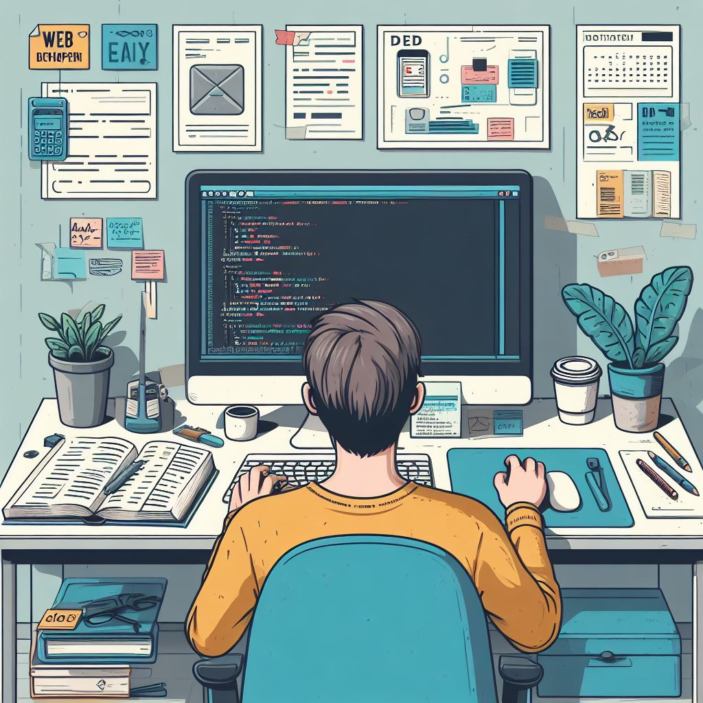

In my free time, I am passionate about web development and design. I enjoy creating and customizing websites, experimenting with new design trends, and optimizing user experiences. This hobby has allowed me to enhance my coding skills, learn new web technologies, and stay updated with the latest design practices, which can be beneficial in my academic and professional pursuits.

Cricket is not just a sport for me; it's a passion. I have been an avid cricket enthusiast for many years, both as a player and a spectator. Playing cricket has not only improved my physical fitness but also taught me the values of teamwork, strategy, and discipline. Whether it's a friendly weekend match or watching international games, cricket remains a source of joy and valuable life lessons.
I have a deep interest in superhero movies, especially those from the Marvel Cinematic Universe. Exploring the adventures of iconic characters like Iron Man, Spider-Man, and the Avengers provides me with an escape into a world of fantasy and imagination. It's not just entertainment; it's a way for me to appreciate storytelling, character development, and visual effects. Additionally, the camaraderie and teamwork portrayed in these movies align with my own values and interests in collaborative problem-solving.